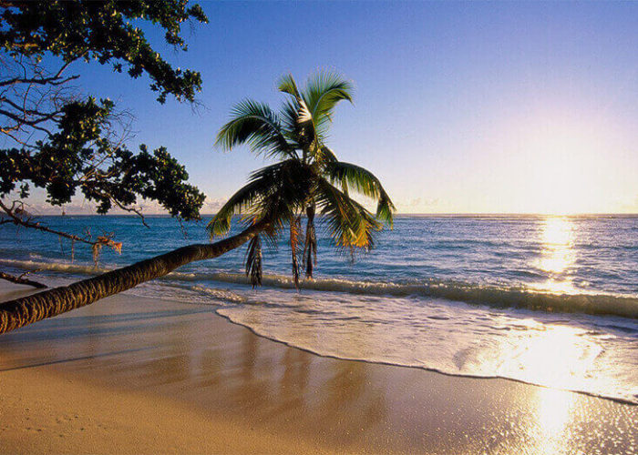

Hikkaduwa
The beach of Hikkaduwa is situated 98 km from Colombo towards the south of Sri Lanka. This fun coastal town, 14 km away from Galle was the first (1960’s) of Sri Lanka’s beautiful beaches to be discovered by tourists.You can always rent the necessary equipment needed for snorkelling and surfing from a number of places Hikkaduwa is an established tourist destination and the surfing there is quite well known.
 Jungle Beach is a secluded beach in Unawatuna that's growing less secluded all the time. It's still a nice and relatively peaceful Una beach off the main strip. It’s not exactly a secret — you can clearly see it from the Fort, and everybody in Galle knows exactly where it is. And getting there wasn’t even difficult: a 400 Rupee tuk-tuk drive to the pagoda, and then a quick ten-minute downhill hike.
Jungle Beach is a secluded beach in Unawatuna that's growing less secluded all the time. It's still a nice and relatively peaceful Una beach off the main strip. It’s not exactly a secret — you can clearly see it from the Fort, and everybody in Galle knows exactly where it is. And getting there wasn’t even difficult: a 400 Rupee tuk-tuk drive to the pagoda, and then a quick ten-minute downhill hike. Tangalle is situated in Hambantota district, with relatively mild climate and golden beaches. Located in the beaches of the South Coast in Sri Lanka it is also a small town known to be a less-busy beach holiday destination.Many popular spots are available for surfing, swimming and other water sports activities which have around the area. They are provided in the villages in Tangalle namely Medilla, Pallikaduww, Mawella and Seenimodara.
Tangalle is situated in Hambantota district, with relatively mild climate and golden beaches. Located in the beaches of the South Coast in Sri Lanka it is also a small town known to be a less-busy beach holiday destination.Many popular spots are available for surfing, swimming and other water sports activities which have around the area. They are provided in the villages in Tangalle namely Medilla, Pallikaduww, Mawella and Seenimodara.